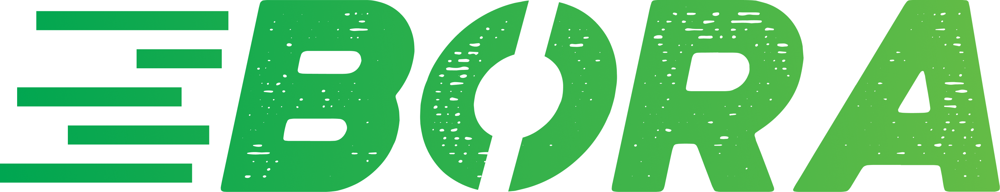
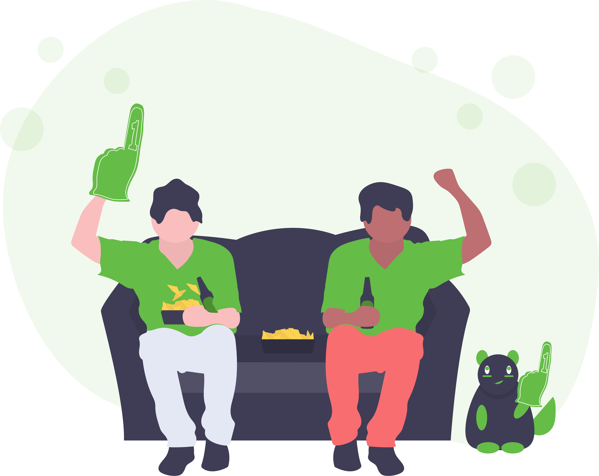
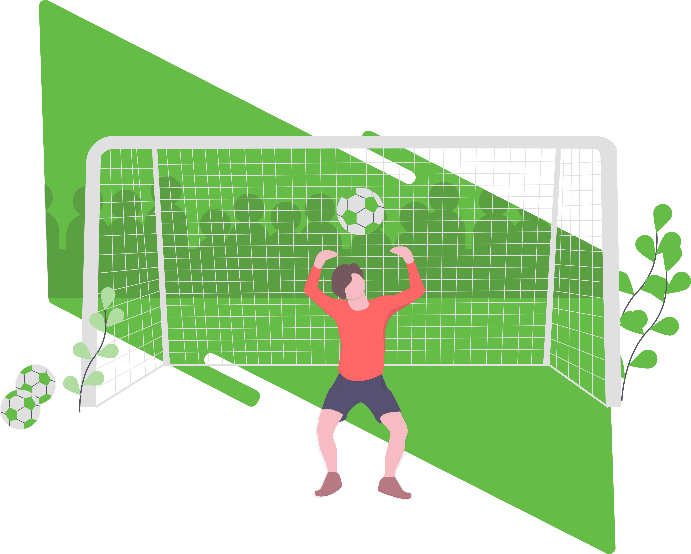
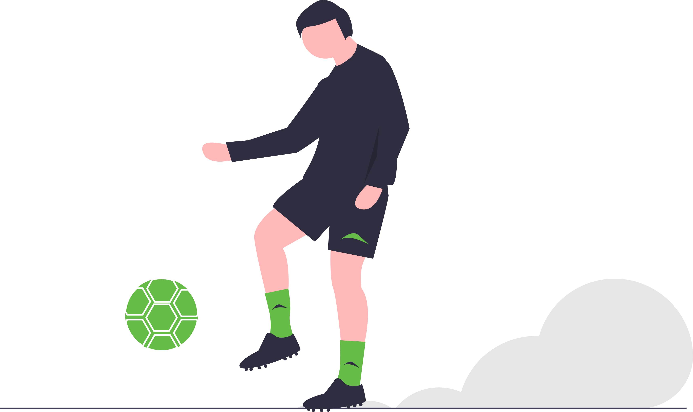
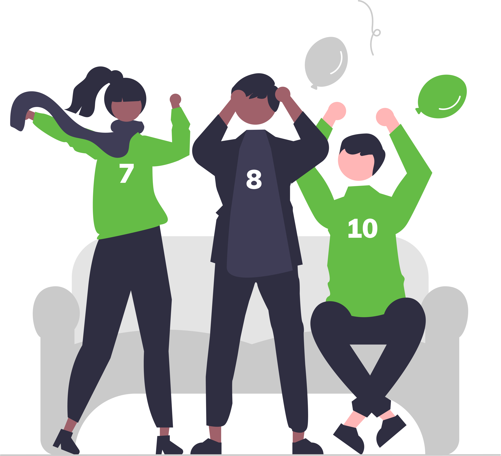
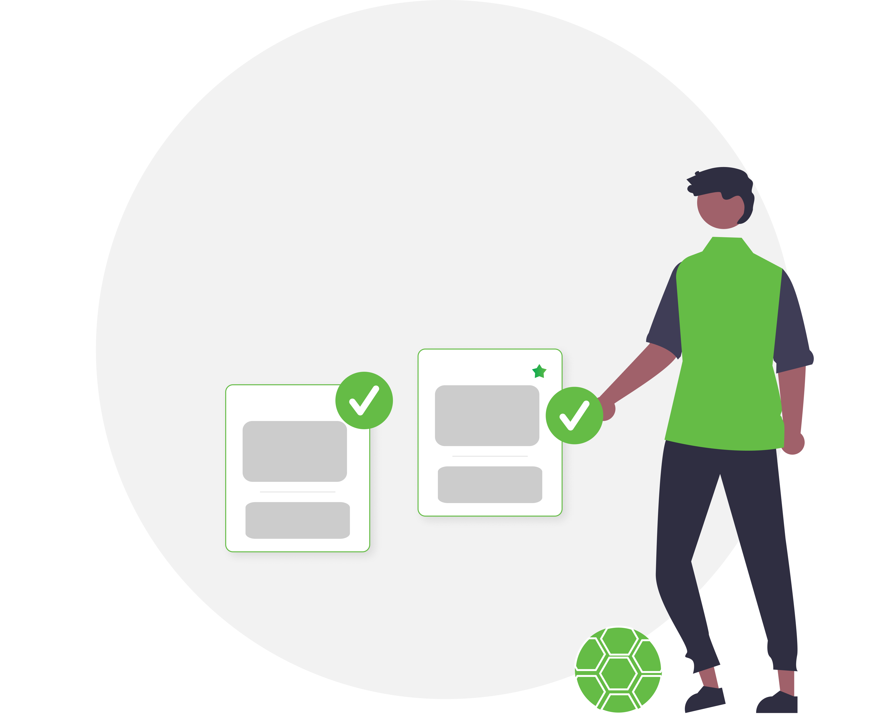

Manifesto
O cenário
Enquanto no futebol profissional é comum a cobertura da mídia, no futebol amador a realidade é diferente. Mesmo os melhores campeonatos não conseguem trazer a experiência do atleta profissional para o seu cliente.
Nossa Resposta
Potencializar a experiência dos atletas de futebol amador em todo o Brasil. Revolucionar o futebol amador, sendo pioneiro em serviços de tecnologia, jornalismo e entretenimento.
Logometria
O logotipo do BORA deve ser usado com máximo contraste. Evite distorções ou aplicação sobre fundos que dificultem a legibilidade.

Paleta de Cores
A paleta de cores é composta por tons escuros profundos e verdes vibrantes que imprimem velocidade e tecnologia (Sport-Tech Brutalism).
Tipografia
Nossa hierarquia de texto transmite força bruta nas manchetes e precisão técnica nos corpos de texto.
Amador,
Estrutura
Profissional.
Usada para grande impacto, números estatísticos e chamadas de ação.
Usada para leitura longa, descrição de produtos e serviços, e textos de interface UI.
Grafismos & Ilustrações
Imagens marcantes extraídas do universo do futebol que dão corpo e alma à página. Sempre com tratamento de alto contraste e foco na ação.





Elementos de Interface
Componentes digitais, botões e interações (Interface e Botões de WhatsApp).
Referência Web (Landing Page)
Mockup oficial que guia todas as decisões de interface e disposição de conteúdo da marca digital.